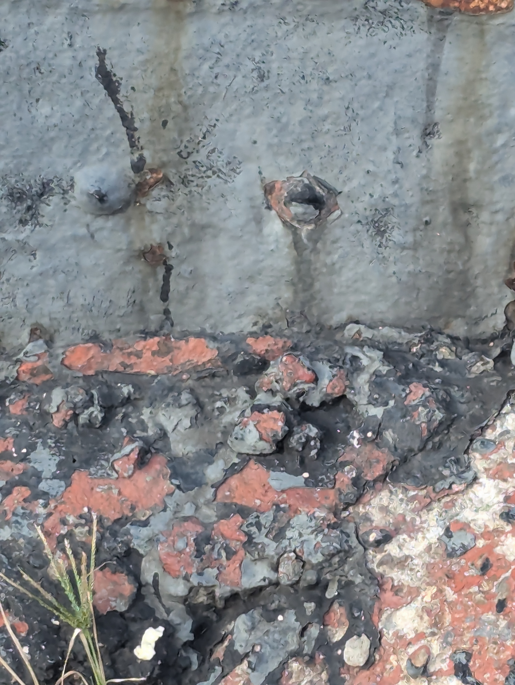
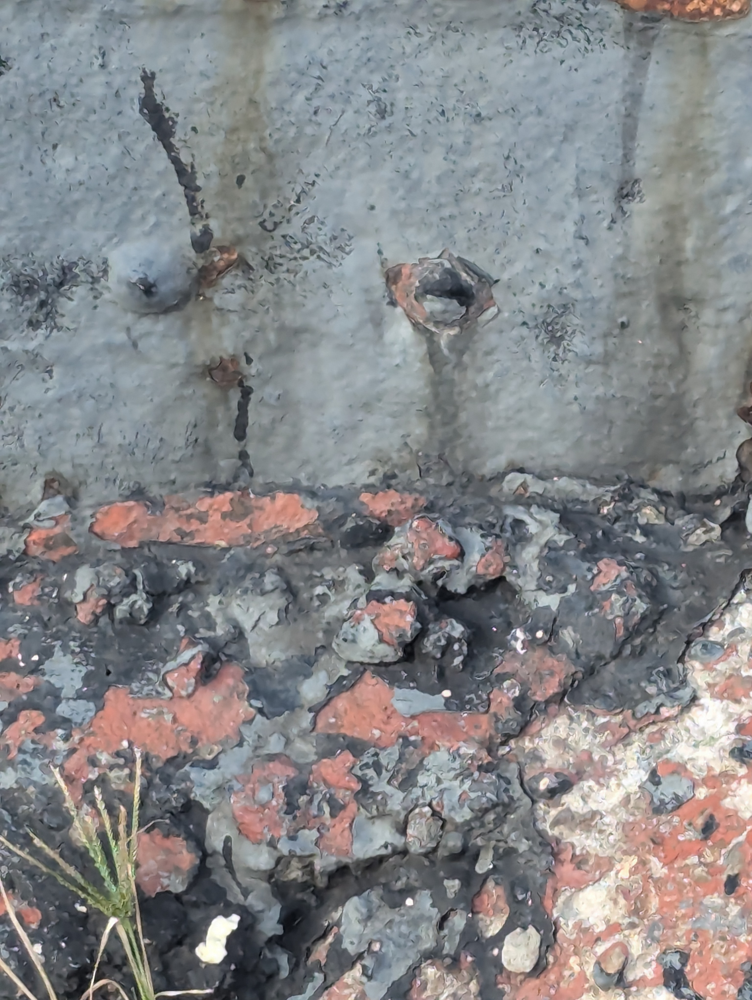

On the evening of September 5th I travelled with my friend Jame from Washington Square to Bushwick, arriving at the J stop at Gates Ave we walked down and over to our friend Seth's apartment. Here we picked up a keyboard and some MIDI cables, all 3 of us then departed from Seth's apartment and walked to The Living Gallery on Broadway and Dodworth. There we met our other friend KK, once we had entered the space set-up began for the show that evening in which Seth, Jame, and KK all played. The music was transfixing, ambient and ethereal, it was as if electronic angels had been sent down to play their harmonies for us. After sharing a cigarette, Jame, Seth, and I walked over to a nearby deli. Seth got a hamburger, I got a bacon, egg, and cheese, and a Diet Pepsi, Jame got a pineapple Truly. We walked back to the venue, the wholetime discussing performance art and what it can be versus what it oftentimes is. In particular we talked about cutspace's recent show at Market Hotel and how opening a techno and hardcore show with performance art was an odd choice. Later I found myself in the courtyard behind the venue discussing emo violence bands with Seth and a couple other people. We talked at length about Pg. 99, Daitro, city of caterpillars, Orchid, it was nice to be around people who appreciated some of the nastier music out there. We went back in for Jame's set as she was closing out the night. It was truly a dream, the soft and dim blue light extruding from the corner being the only illumination in the room besides Jame's hardware. Once she had finished we tore down all the equipment and tables and went our seperate ways. I took the J back to Canal St and then took the Q home. On my walk back the night air was cool and the Chanel Beads in my headphones was a peaceful way to end my journey.

 
